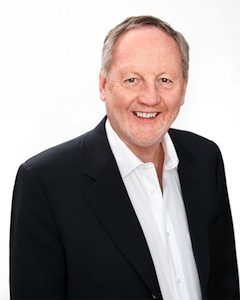

Michael Fullan 1940–
Investigador del cambio educativo · Canadá
Big idea. El cambio educativo es un proceso, no un evento: requiere capacidad colectiva, liderazgo en todos los niveles y coherencia. No se decreta desde arriba; se construye con la gente.
En la práctica. La acción tutorial perdura si la escuela la asume como cultura, no como tarea de un docente aislado: necesita liderazgo y estructuras que la sostengan.